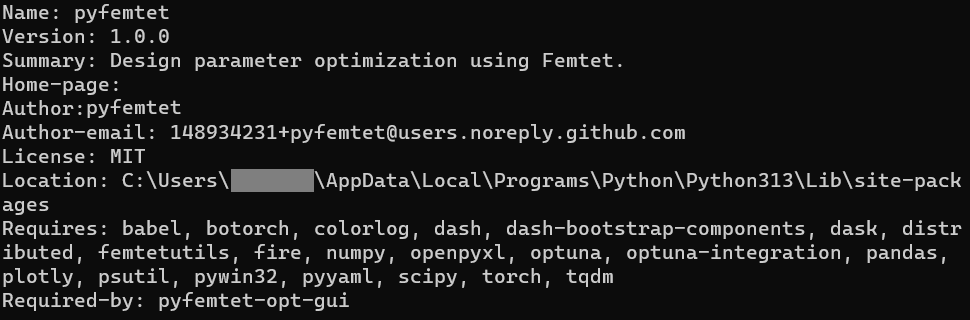

PyFemtet のインストール
この手順には管理者権限が必要です。
注釈
この手順には Python 3.11、3.12、または 3.13 が必要です。これ以外のバージョンの Python に PyFemtet をインストールする場合は、このページの末尾に記載の手動手順に従ってください。
両方のファイルをダウンロードしてください。
同じフォルダに配置してください。
「pyfemtet-installer-runner.bat」を右クリックし、「管理者として実行」を選択してください。
注釈
セキュリティ上の理由で .bat ファイルがダウンロードできない場合は、管理者権限 のある コマンドプロンプト を起動して下記のコマンドを代わりに使用できます。
powershell -ExecutionPolicy Bypass -File <path/to/your/downloaded/.ps1>
<path/to/your/downloaded/.ps1> はダウンロードした pyfemtet-installer.ps1 ファイルのパスに置き換えてください。パスはファイルを shift + 右クリック して「パスとしてコピー」を選択すると取得できます。
警告
*セキュリティに関する警告*
このコマンドは一時的にセキュリティを緩和して powershell スクリプトを実行します。このコマンドを実行する前に、コマンドで指定した .ps1 ファイルがこのページからダウンロードしたファイルであることを確認してください。
警告
このスクリプトは Python のインストール構成に py launcher が含まれていることを前提としています。Python のカスタムインストールを行った場合は、 そのインストール構成に `py launcher` が含まれていることを確認してください。
Tip
仮想環境で PyFemtet をセットアップしたい場合は、スクリプトの 24 行目を下記の通りに変更し、仮想環境をアクティベートしたコマンドラインでスクリプトを実行してください。
$python_command = "python"
PyFemtet がインストールできているか確認する
インストールを後から確認したい場合は、以下の手順に従ってください。
Windows キーを押してコマンドプロンプトを開きます。

「py -m pip show pyfemtet」と入力して Enter キーを押してください。（GUI ツールの場合は「py -m pip show pyfemtet-opt-gui」）
以下の結果が表示されれば、セットアップは成功しています。（
'py' は、内部コマンドまたは外部コマンド、操作可能なプログラムまたはバッチ ファイルとして認識されていません。というメッセージが表示された場合は、Python がインストールされていません。）WARNING: Package(s) not found: pyfemtet（またはpyfemtet-opt-gui）というメッセージが表示された場合、PyFemtet（またはその GUI ツール）がインストールされていません。
手動インストール
この手順が失敗した場合は、次の手順を手動で試してください。